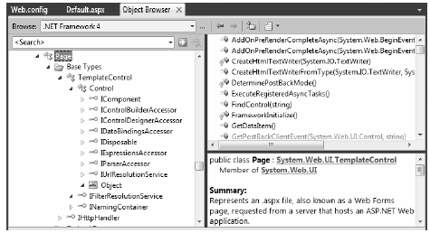
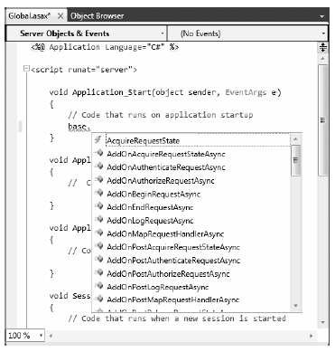

At this point, an ASP.NET application may seem little more than a set of.aspx files and their respective web controls. While you could build a web application by simply linking a set of related web pages, you will most likely need a way to interact with the web application as a whole. To this end, an ASP.NET application may choose to include an optional Global.asax file via the Web Site > Add New Item menu option, as shown in Figure 34-2 (notice you are selecting the Global Application Class icon).
Figure 34-2 The Global.asax file
Simply put, Global.asax is just about as close to a traditional double-clickable *.exe as you can get in the world of ASP.NET, meaning this type represents the runtime behavior of the web site itself. When you insert a Global.asax file into a web project, you’ll see it’s little more than a <script> block containing a set of event handlers:
<%@ Application Language="C#" %> <script runat="server"> void Application_Start(object sender, EventArgs e) { // Code that runs on application startup. } void Application_End(object sender, EventArgs e) { // Code that runs on application shutdown. } void Application_Error(object sender, EventArgs e) { // Code that runs when an unhandled error occurs. } void Session_Start(object sender, EventArgs e) { // Code that runs when a new session is started. } void Session_End(object sender, EventArgs e) { // Code that runs when a session ends. // Note: The Session_End event is raised only when the sessionstate mode // is set to InProc in the Web.config file. If session mode is set to // StateServer or SQLServer, the event is not raised. } </script>
Looks can be deceiving, however. At runtime, the code within this <script> block is assembled into a class type deriving from System.Web.HttpApplication (if you have a background in ASP.NET 1.x, you may recall that the Global.asax code-behind file literally did define a class deriving from HttpApplication).
As mentioned, the members defined inside Global.asax are event handlers that allow you to interact with application-level (and session-level) events. Table 34-1 documents the role of each member.
Table 34-1. Core Types of the System.Web Namespace
| Event Handler | Meaning in Life |
|---|---|
| Application_Start() | This event handler is called the very first time the web application is launched. Thus, this event will fire exactly once over the lifetime of a web application. It is an ideal place to define application-level data used throughout your web application. |
| Application_End() | This event handler is called when the application is shutting down. This will occur when the last user times out or if you manually shut down the application via IIS. |
| Session_Start() | This event handler is fired when a new user reaches your application. Here you can establish any user-specific data points you want to preserve across postbacks. |
| Session_End() | This event handler is fired when a user’s session has terminated (typically through a predefined timeout). |
| Application_Error() | This is a global error handler that will be called when an unhandled exception is thrown by the web application. |
First, let me point out the role of the Application_Error() event handler. Recall that a specific page may handle the Error event to process any unhandled exception that occurred within the scope of the page itself. In a similar light, the Application_Error() event handler is the final place to handle an exception that was not handled by a given page. As with the page-level Error event, you are able to access the specific System.Exception using the inherited Server property:
void Application_Error(object sender, EventArgs e)
{
// Obtain the unhandled error.
Exception ex = Server.GetLastError();
// Process error here...
// Clear error when finished.
Server.ClearError();
}
Given that the Application_Error() event handler is the last-chance exception handler for your web application, it is quite common to implement this method in such a way that the user is transferred to a predefined error page on the server. Other common duties may include sending an e-mail to the web administrator or writing to an external error log.
As mentioned, the Global.asax script is dynamically generated as a class deriving from the System.Web.HttpApplication base class, which supplies some of the same sort of functionality as the System.Web.UI.Page type (without a visible user interface). Table 34-2 documents the key members of interest.
Table 34-2. Key Members Defined by the System.Web.HttpApplication Type
| Property | Meaning in Life |
|---|---|
| Application | This property allows you to interact with application-level data, using the exposed HttpApplicationState type. |
| Request | This property allows you to interact with the incoming HTTP request, using the underlying HttpRequest object. |
| Response | This property allows you to interact with the incoming HTTP response, using the underlying HttpResponse object. |
| Server | This property gets the intrinsic server object for the current request, using the underlying HttpServerUtility object. |
| Session | This property allows you to interact with session-level data, using the underlying HttpSessionState object. |
Again, given that the Global.asax file does not explicitly document that HttpApplication is the underlying base class, it is important to remember that all of the rules of the “is-a” relationship do indeed apply. For example, if you were to apply the dot operator to the base keyword (or if you prefer, the this keyword) within any of the members in Global.asax, you would find you have immediate access to all members of the chain of inheritance, as you see in Figure 34-3.
Figure 34-3 Remember that HttpApplication is the parent of the type lurking within Global.asax